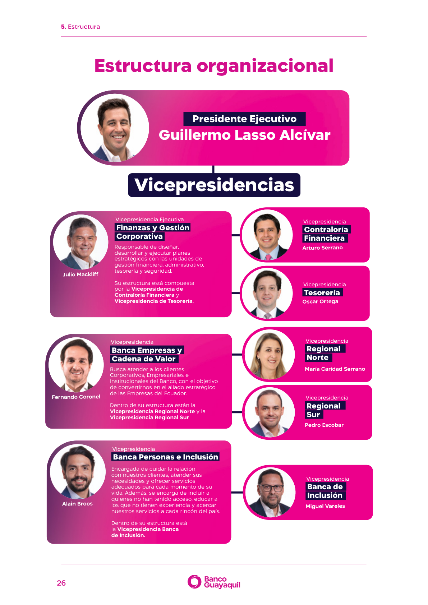
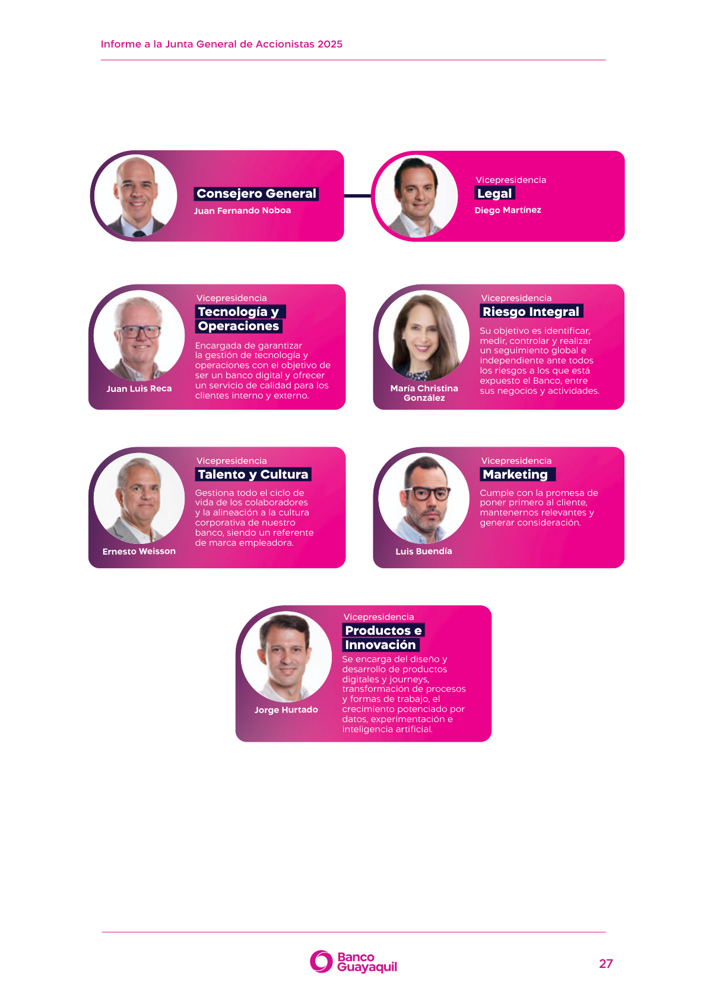
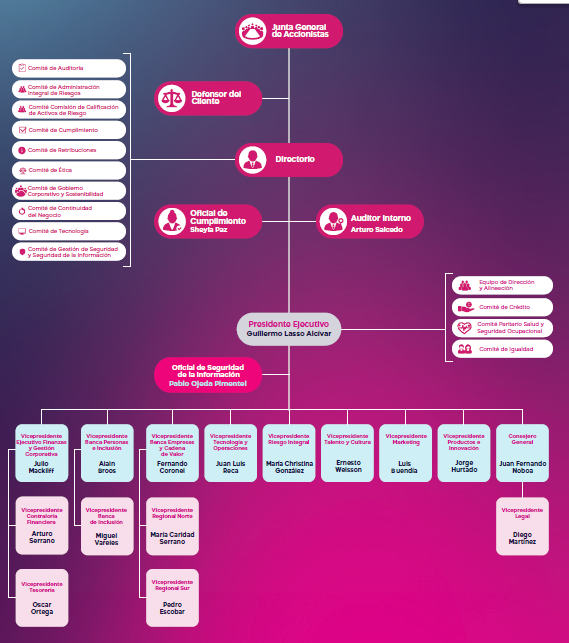

[GRI 2-9, 2-10, 2-11, 2-12, 2-13, 2-15, 2-16, 2-17, 2-19, 2-20, 2-23, 2-24, 2-25, 2-26, 205-1, 205-2, 205-3, 206-1, 405-1 | SASB FN-CB-230a.2, FN-CB-510a.1, FN-CB-510a.2 | NIIF S1 — Gobernanza, Gestión de riesgos]
En este capítulo describimos nuestro modelo de gobierno corporativo y los mecanismos de ética, integridad, compliance, antisoborno y transparencia que orientaron nuestra gestión durante 2025. Nuestro marco normativo interno se sustenta en el Código de Gobierno Corporativo, alineado con los Principios de la Organización para la Cooperación y el Desarrollo Económicos OCDE y el G20, así como con la normativa de la Superintendencia de Bancos. Con ello fortalecemos la confianza de nuestros grupos de interés y respaldamos una gestión responsable y sostenible del negocio.
Buen gobierno corporativo
[GRI 2-9, 2-10, 2-11, 2-12, 2-13, 2-15, 2-17, 2-19, 2-20, 2-29, 405-1 | SASB FN-CB-510a.2 | NIIF S1 — Gobernanza]
Nuestro gobierno corporativo integra las reglas de organización y funcionamiento que regulan las relaciones entre accionistas, Directorio, Alta Administración y grupos de interés. A través de este modelo buscamos proteger los derechos de los accionistas, asegurar un trato equitativo, considerar las expectativas de nuestros grupos de interés y gestionar los impactos, riesgos y oportunidades —incluidos los de sostenibilidad— que pueden afectar la creación de valor en el largo plazo.
Nuestros grupos de interés incluyen, sin limitarse a ellos, accionistas, directores, colaboradores, proveedores, banqueros del barrio, clientes, usuarios financieros, organismos gubernamentales, inversionistas y entidades de control. Nos relacionamos con cada grupo desde la protección de sus derechos, el trato equitativo, la transparencia y la búsqueda de beneficio mutuo.
Principios de gobierno corporativo
[GRI 2-9]
Operamos bajo tres principios generales y cinco principios específicos de gobierno corporativo:
| Principio | Descripción |
|---|---|
| Igualdad | Trato justo y equitativo para accionistas y partes interesadas. Las políticas discriminatorias son inaceptables. |
| Transparencia | Divulgación veraz, completa y oportuna que abarca desempeño financiero, social, ambiental y de gobierno corporativo, más allá de los mínimos legales. |
| Creación de valor integral | Las normas de gobierno corporativo velan por la sostenibilidad de largo plazo, integrando riesgos y oportunidades sociales y ambientales en el negocio. |
| Compliance y autorregulación | Se promueve el desarrollo de políticas, procedimientos y códigos que complementan la normativa externa y forman parte de la cultura organizacional. |
| Gestión de riesgos | El gobierno corporativo resguarda la existencia de una estructura de identificación, priorización y actuación preventiva sobre los riesgos, incluyendo los factores ASG. |
| Sostenibilidad | La sostenibilidad es un objetivo a alcanzar desde un modelo de negocio ético, considerando las expectativas de los grupos de interés y las normas internacionales de comportamiento. |
| Relación con grupos de interés | Diálogo activo y cooperación para la creación de valor, compartiendo información relevante de manera veraz, completa y oportuna. |
| Prevención de la corrupción | Medidas activas para prevenir la corrupción, el soborno y el conflicto de interés en toda la institución. |
Arquitectura de gobernanza
[GRI 2-9, 2-12, 2-13]
| Órgano / instancia | Rol principal |
|---|---|
| 1. Junta General de Accionistas | Órgano supremo de gobierno y decisión societaria del Banco. Aprueba estados financieros, designa directores y auditores, y resuelve sobre distribución de utilidades y reformas estatutarias. Algunos de sus aspectos relevantes son:
|
| 2. Directorio | Dirección estratégica, supervisión y control institucional. Define políticas generales, aprueba estrategias y supervisa la gestión de riesgos y cumplimiento. Algunos de sus aspectos relevantes son:
Entre sus prohibiciones, se encuentran:
En cuanto a las sesiones ordinarias del Directorio, son realizadas, por lo menos, una vez al mes, siendo convocadas por el Presidente del Directorio, el Presidente Ejecutivo o quienes los subroguen. Complementariamente, pueden ejecutarse reuniones extraordinarias. |
| 3. Comités normativos | Apoyo al Directorio en control, riesgos, auditoría, cumplimiento, ética y retribuciones. Sus pronunciamientos son orientativos salvo delegación expresa. Además, tienen la responsabilidad de entregar al Directorio un informe sobre sus funciones, asuntos tratados en sus sesiones y acuerdos adoptados, con una frecuencia, como mínimo, anual. |
| 4. Comités gerenciales | Ejecución y seguimiento operativo de decisiones estratégicas. Complementan la actividad de los comités normativos, permitiéndole al Banco gestionar los temas con mayor incidencia en la operación y atender aquellos emergentes que resulten del contexto. |
| 5. Alta Administración | Implementación de directrices aprobadas y gestión del negocio. Incluye:
|
| 6. Áreas de control y gestión | Riesgos, cumplimiento, auditoría, legal, seguridad integral, talento y sostenibilidad. |
Nota: Los principales grupos de interés del Banco tienen o no su representación en dichos órganos acorde a las siguientes razones:
Accionistas: la Junta General de Accionistas se encuentra representada de las siguientes formas: a) en el Directorio, a través de la designación de los Directores principales y suplentes, y b) en los comités de Ética y Retribuciones a través de un representante designado en cada uno de ellos.
Colaboradores: acorde a lo dispuesto Estatuto Social, los colaboradores no pueden formar parte del Directorio, no obstante, tienen representación en los comités de Cumplimiento, Ética, Gobierno Corporativo y Sostenibilidad, Paritario de Seguridad y Salud en el Trabajo, Seguridad Integral y Tecnología. Complementariamente, cabe mencionar que en ciertos Comités Normativos y Gerenciales no hay participación de los colaboradores debido a disposiciones del Código Orgánico Monetario y Financiero y del Estatuto Social del Banco.
Los demás grupos de interés, tales como clientes, proveedores, contratistas, banqueros del barrio, Estado, medios de comunicación y ONGs no tienen una representación directa en el Directorio y sus comités, no obstante, se consideran sus necesidades y expectativas en la toma de decisiones de estos órganos.
Ejes de la agenda de gobierno corporativo 2025
| Eje | Enfoque 2025 | Valor que genera |
|---|---|---|
| Participación accionarial | Acceso a información, participación informada y ejercicio de derechos societarios mediante mecanismos seguros. | Confianza y trato equitativo. |
| Dirección estratégica | Supervisión del Plan Estratégico, resultados, riesgos, cumplimiento y asuntos de sostenibilidad. | Crecimiento rentable y sostenible. |
| Ética y cumplimiento | Fortalecimiento del Código de Ética, ISO 37301 (Compliance), ISO 37001 (Antisoborno), PARLAFD y canales de denuncia. | Integridad y reputación corporativa. |
| Sostenibilidad y ASG | Incorporación progresiva de criterios ASG en gestión, riesgos y reportes. Estrategia de Sostenibilidad aprobada y supervisada | Valor de largo plazo para grupos de interés. |
Junta General de Accionistas
[GRI 2-9, 2-29]
La Junta General de Accionistas es nuestro máximo órgano de gobierno. La convocamos anualmente en sesión ordinaria dentro de los 90 días posteriores al cierre del ejercicio, y de manera extraordinaria cuando corresponde. La modalidad virtual de la junta facilita la participación equitativa mediante plataformas tecnológicas seguras y, una vez celebrada, ponemos a disposición de los accionistas los acuerdos adoptados.
Indicadores de Participación en Juntas de Accionistas 2025
| Indicador | Junta Ordinaria | Junta Extraordinaria |
|---|---|---|
| Fecha | 17/02/2025 | 01/05/2025 |
| No. accionistas | 7.478 | 7.504 |
| No. asistentes | 201 | 83 |
| % asistentes / total accionistas | 2,69 % | 1,11 % |
| Capital representado | 83,38 % | 82,28 % |
Al cierre de 2025, el Banco registró 7.704 accionistas (96,43 % personas naturales y 3,57 % personas jurídicas); el 86,15 % mantuvo una permanencia superior a cinco años. Los mecanismos de difusión incluyeron oficina presencial (1.632 accionistas), oficina virtual (1.059) y material sobre desmaterialización de acciones (3.843). La capacitación sobre desmaterialización alcanzó 3.821 participantes (49,60 % de la base accionarial).
Directorio: composición, diversidad y funcionamiento
[GRI 2-9, 2-10, 2-17, 405-1]
El Directorio es el máximo órgano responsable de la administración del Banco. Su conformación se basa en idoneidad, experiencia, independencia y diversidad. Los miembros del Directorio son elegidos por la Junta General de Accionistas por períodos de dos años, pudiendo ser reelegidos indefinidamente.
La selección de directores promueve un Directorio diverso y equilibrado, buscando diversidad en formación, experiencia, género, edad y otras características.
Indicadores de composición, diversidad y funcionamiento del Directorio en 2025
| Indicador | Resultado 20251 |
|---|---|
| Participación de mujeres | 30 % (3 de 10 miembros vigentes al cierre) |
| Nacionalidad | 50 % ecuatorianos; 50 % extranjeros |
| Distribución por grupo de edad | 0 % menores de 30 años, 50 % entre 30 y 50 años; 50 % mayores a 50 años |
| Distribución por región | 30 % Centro; 20 % Norte y 50 % Otra-extranjero |
| Tipo de miembro | 100 % no ejecutivos |
| Independencia | 100 % independientes |
| No. Sesiones ordinarias | 12 |
| No. Sesiones extraordinarias | 8 |
| Total sesiones del Directorio | 20 |
| Tiempo promedio de permanencia | 2,23 años |
1. Resultados con corte al 31 de diciembre de 2025.
En abril de 2025, los miembros del Directorio, Leonardo Moreira Luzuriaga y Víctor Hugo Alcívar Álava dejaron de ejercer funciones. En junio se incorporaron al Directorio: Michael Fitzpatrick, Diego Benenzon y Roberto Andrade Malo, fortaleciendo la diversidad de perfiles.
Las áreas de experiencia del Directorio son administración de empresas, asesoramiento estratégico e inversión, ciencias políticas, contaduría pública, derecho, finanzas y economía, fintech, ingeniería, psicología, políticas públicas y sociología.
Perfiles del Directorio 2025
[GRI 2-9 | NIIF S1 — Gobernanza]
A continuación, se presenta la composición del Directorio con corte al 31 de diciembre de 2025, incluyendo miembros que cesaron funciones durante el año.
Composición del Directorio con corte al 31 de diciembre de 2025
| Miembro | Cargo | Profesión / Competencias relevantes | Experiencia | Fecha de ingreso al Directorio | Nacionalidad | Edad | Estado 2025 | Otros cargos o compromisos significativos | ||
|---|---|---|---|---|---|---|---|---|---|---|
| Comité que preside o presidió | Otros cargos | Número | ||||||||
| Econ. Angelo Luis Caputi Oyague | Presidente / Director Principal | Economista Máster en Administración de Empresas Máster en Fintech e Información Financiera |
Presidente del Directorio – Banco Guayaquil S.A. Presidente Ejecutivo – Banco Guayaquil S.A. Vicepresidente Ejecutivo – Banco Guayaquil S.A. |
31/10/2023 | Ecuatoriana | 61 | Vigente | Tecnología, CAIR, Crédito, Retribuciones, Comisión Especial de Calificación de Activos de Riesgos, Gobierno Corporativo y Sostenibilidad | Preside una compañía | 7 |
| Econ. Paola Cristina Ycaza Oneto | Directora Principal | Máster en Ciencias Políticas Economista con concentración en Relaciones Económicas Internacionales |
Directora – Banco Guayaquil S.A. Coordinadora del Centro de Estudios Económicos y Sociales para el Desarrollo de la Universidad de Especialidades Espíritu Santo (UEES) | 13/04/2022 | Ecuatoriana | 39 | Vigente | Retribuciones, Gobierno Corporativo y Sostenibilidad | No aplica | 2 |
| Econ. Julio José Prado Lucio-Paredes | Director Principal | PhD en Management | Director – Banco Guayaquil S.A Director del Departamento de Economía del IDE Business School Ex Ministro de Producción, Comercio, Inversiones y Pesca |
17/04/2024 | Ecuatoriana | 47 | Vigente | Continuidad del Negocio | No aplica | 1 |
| Ing. Efraín Enrique Forero Fonseca | Director Principal | MS Industrial Engineering | Director – Banco Guayaquil S.A. Ex Presidente de Banco Davivienda |
17/04/2024 | Colombiana | 70 | Vigente | Sin asignación | No aplica | 0 |
| Sra. Emilia Restrepo Gómez | Directora Principal | Administración de Empresas, CESA | Empresaria, pionera de la transformación digital en Latinoamérica y cofundadora de la primera empresa de consultoría en estrategia digital en Colombia | 17/04/2024 | Colombiana | 58 | Vigente | Gestión de Seguridad y Seguridad de la Información | No aplica | 1 |
| Lcda. Andrea Montalvo Chedraui | Directora Suplente | Magíster en Políticas Públicas Magíster en Educación y asesoramiento familiar |
Directora – Banco Guayaquil S.A. Ex Secretaria de Educación Superior, Ciencia, Tecnología e Innovación – SENESCYT |
17/04/2024 | Ecuatoriana | 43 | Vigente | Ética, Auditoría | No aplica | 2 |
| Lcdo. Alonso Aznar Botella | Director Suplente | Bachelor of Business Administration in Financial Management | Director – Banco Guayaquil S.A. Managing Director at The Consello Group General Manager Iberia, con alcance en Latam, USA, México y Europa Fundador de Zala Capital, Londres, Inglaterra, Reino Unido |
15/05/2024 | Española | 37 | Vigente | Sin asignación | No aplica | 0 |
| Sr. Michael Fitzpatrick | Director Suplente | Sociólogo | Diplomático de alto rango Tutor de la Multinacional Misión de Apoyo a la Seguridad. Embajador de Estados Unidos en Ecuador entre 2019 y 2024 Diputado Asistente Secretario de la Oficina del Hemisferio Occidental Representante Permanente Interino de la Misión de los Estados Unidos ante la Organización de Estados Americanos |
18/06/2025 | Estadounidense | 66 | Incorporación en junio 2025 | Sin asignación | No aplica | 0 |
| Sr. Diego Benenzon | Director Suplente | Licenciado en Psicología | Vicepresidente de Recursos Humanos para Latinoamérica y el Caribe de Arcos Dorados McDonald’s Experiencia de liderazgo en Citibank Consultor senior en diversas compañías de primera línea Docente |
18/06/2025 | Argentina | 59 | Incorporación en junio 2025 | Retribuciones | No aplica | 1 |
| Dr. Roberto Andrade Malo | Director Suplente | Abogado | Consultor en prevención de lavado de activos, compliance y derecho penal para empresas Asesor Jurídico Externo en la Cámara de Comercio de Guayaquil. Director General en la Unidad de Análisis Económico y Financiero (UAFE) Subsecretario General de la Secretaría de Política Pública Anticorrupción. Asesor de la Secretaría General Jurídica de la Presidencia de la República Fundador de Roberto Andrade Malo Abogado |
18/06/2025 | Ecuatoriana | 36 | Incorporación en junio 2025 | Auditoría, Cumplimiento | No aplica | 2 |
| Ing. Leonardo Moreira Luzuriaga | Director Principal | Ingeniero | Director Principal – Banco Guayaquil S.A. Vicepresidente de Banca Empresas – Banco Guayaquil S.A. |
17/10/2018 | Ecuatoriana | 77 | Cesó funciones en abril 2025 | Auditoría, Crédito | No aplica | 2 |
| CPA Víctor Hugo Alcívar Álava | Director Principal | Diplomado en Alta Dirección Especialista en Coaching |
Director – Banco Guayaquil S.A. Vicepresidente Ejecutivo – Gerente General de Banco Guayaquil S.A. |
09/12/2020 | Ecuatoriana | 73 | Cesó funciones en abril 2025 | Auditoría, Calificación de Activos de Riesgo, Cumplimiento, Retribuciones | No aplica | 4 |
Funciones y responsabilidades del Directorio
[GRI 2-9, 2-12, 2-13]
Definir y controlar la política financiera y crediticia.
Aprobar estrategias corporativas, presupuesto anual y políticas generales.
Supervisar los sistemas de control interno y la gestión de información gerencial.
Evaluar la gestión de la Alta Administración y la eficiencia de las prácticas de gobierno.
Aprobar y revisar la política y gestión de riesgos, nuevos productos y servicios, y la planeación estratégica financiera y extra financiera (desempeño social y ambiental).
Supervisar la Estrategia de Sostenibilidad y su alineación con compromisos ASG.
Aprobar la estrategia de sostenibilidad, los indicadores del cuadro de mando y sus objetivos.
Promover la integridad de los sistemas contables, de información, control interno y gestión de riesgos.
Seleccionar, evaluar y sustituir a la Presidencia Ejecutiva y Vicepresidencias Ejecutivas, y supervisar el Plan de Sucesión.
Capacitación del Directorio 2025
[GRI 2-9, 2-17]
Durante 2025 desarrollamos un programa de capacitación para los miembros de nuestro Directorio, en línea con lo establecido en el Código de Gobierno Corporativo, con el objetivo de fortalecer una toma de decisiones informada y alineada con el entorno económico, tecnológico, político y de seguridad.
En este marco, realizamos cinco jornadas de formación sobre temas clave, las cuales sumaron 9,53 horas de capacitación. El detalle de estas capacitaciones se detalla en la siguiente tabla.
Capacitaciones al Directorio efectuadas en 2025
| Tema capacitación/comunicación | No. Miembros convocados | No. Miembros Participantes | % Participantes | Fecha | Duración (h) |
|---|---|---|---|---|---|
| Situación Política del Ecuador 2025: Riesgos y Oportunidades | 9 | 8 | 88,9 % | 16/4/2025 | 2h30 |
| Ciberseguridad e Inteligencia Artificial desde el enfoque del Board | 10 | 10 | 100,0 % | 19/8/2025 | 2h30 |
| Crimen Organizado en Ecuador: Riesgos Emergentes y Medidas preventivas desde la Seguridad Bancaria | 10 | 5 | 50,0 % | 4/9/2025 | 1h45 |
| Sistema de Gestión Antisoborno SGAS y Sistema de Gestión Compliance SGCo | 10 | 6 | 60,0 % | 21/10/2025 | 0h47 |
| Escenarios Económicos Cierre 2025 - Proyección 2026 | 9 | 10 | 90,0 % | 19/11/2025 | 2h00 |
Independencia, conflictos de interés y retribución
[GRI 2-9, 2-15, 2-19, 2-20 | NIIF S1 — Gobernanza | NIIF S2 – Gobernanza climática]
Durante 2025 se presentaron trimestralmente al Directorio informes de evaluación de conflictos de interés de los miembros del Gobierno Corporativo y Alta Administración.
En los períodos evaluados no se identificaron casos de conflicto de interés.
El Comité de Retribuciones revisa y propone lineamientos; la Junta General conserva atribuciones de aprobación.
La evaluación del desempeño del Directorio se realiza de manera anual mediante autoevaluación, coordinada por el Secretario Corporativo, pudiendo complementarse con evaluación externa por terceros especialistas.
A la fecha, el esquema de compensación variable de la Alta Administración no incluye métricas específicas vinculadas al desempeño en sostenibilidad ni al desempeño climático. El Banco reconoce este aspecto como una oportunidad de mejora en su modelo de gobernanza y evaluará la incorporación de estos aspectos a largo plazo.
Alta Administración
[GRI 2-11, 2-13 | NIIF S1 — Gobernanza]
En 2025, nuestro equipo ejecutivo estuvo liderado por el Presidente Ejecutivo, Guillermo Lasso Alcívar, y conformado por 13 vicepresidencias responsables de las áreas de negocio, control, tecnología, talento, riesgos, marketing, innovación y soporte estratégico. De manera complementaria, el equipo contó con la participación del Consejero General, quien brinda asesoría legal y soporte especializado a la Alta Administración.
Composición de la Alta Administración
| Indicador | Número de miembros | Participación |
|---|---|---|
| Total de miembros de la Alta Administración | 16 | 100 % |
| Hombres | 14 | 87,5 % |
| Mujeres | 2 | 12,5 % |
| Nivel académico de postgrado | 15 | 93,8 % |
| Nivel académico superior | 1 | 6,3 % |
| Formación en Negocios, Economía y Finanzas | 13 | 81,3 % |
| Formación en Derecho | 2 | 12,5 % |
| Formación en STEM | 1 | 6,3 % |


Comités normativos y gerenciales
[GRI 2-9, 2-12, 2-13, 2-16, 2-26]
En 2025, contamos con un total de 14 comités, de los cuales 10 fueron normativos y 4 gerenciales, que en conjunto realizaron 152 sesiones durante el año. Los comités normativos concentraron 55 sesiones, orientadas principalmente a la supervisión de riesgos, auditoría, cumplimiento, ética, seguridad, tecnología y retribuciones, mientras que los comités gerenciales realizaron 97 sesiones, enfocadas en la ejecución operativa, el seguimiento del desempeño y la coordinación de iniciativas estratégicas.
| Tipo | Nombre de Comité | Función resumida | No. de sesiones |
|---|---|---|---|
| Comités Normativos | Comité de Administración Integral de Riesgos | Define estrategias, políticas y procedimientos para la gestión integral de riesgos. | 12 |
| Comités Normativos | Comité de Auditoría | Asesora al Directorio en auditoría, control interno y cumplimiento de objetivos estratégicos. | 9 |
| Comités Normativos | Comité de Continuidad del Negocio | Coordina acciones para mitigar eventos externos y asegurar la continuidad operativa. | 3 |
| Comités Normativos | Comité de Cumplimiento | Define políticas y controles para prevenir lavado de activos y financiamiento de delitos. | 12 |
| Comités Normativos | Comité de Ética | Vela por el cumplimiento del Código de Ética y analiza posibles incumplimientos. | 2 |
| Comités Normativos | Comité de Gestión de Seguridad y Seguridad de la Información | Supervisa la seguridad física, digital, de la información y la prevención de fraudes. | 4 |
| Comités Normativos | Comité Paritario de Seguridad y Salud en el Trabajo | Promueve la prevención de riesgos laborales y la gestión de seguridad y salud en el trabajo. | 4 |
| Comités Normativos | Comité de Retribuciones | Propone y supervisa políticas de remuneración y compensación de ejecutivos y directores. | 1 |
| Comités Normativos | Comité de Tecnología | Supervisa políticas e inversiones tecnológicas alineadas a la estrategia del Banco. | 4 |
| Comités Normativos | Comisión Especial de Calificación de Activos de Riesgos | Evalúa activos de riesgo y determina provisiones ante posibles pérdidas. | 4 |
| Comités Gerenciales | Comité de Crédito | Aprueba operaciones de crédito e inversiones, asegurando el cumplimiento normativo y de límites internos. | 48 |
| Comités Gerenciales | Equipo de Dirección y Alineación EDA | Revisa la gestión financiera, presupuestaria, normativa y el avance de proyectos estratégicos. | 48 |
| Comités Gerenciales | Comité de Gobierno Corporativo y Sostenibilidad | Supervisa el buen gobierno corporativo y propone mejoras ambientales, sociales y de gobernanza. | 1 |
| Comités Gerenciales | Comité de Igualdad | Promueve la igualdad de oportunidades y una cultura de respeto y bienestar. | 0 |
Los miembros de los Comités Normativos y Gerenciales deben acogerse a las Directrices del Código de Ética en cuanto a independencia y prevención de conflictos de intereses, ateniéndose a las posibles sanciones en caso de incumplirlas. Como regla general, se establece que quien se encuentre ante un posible conflicto de intereses y deba tomar una decisión, deberá abstenerse de participar en la misma y elevar el caso al superior jerárquico, quien evaluará preliminarmente la existencia del conflicto de intereses, y en caso de considerar que el mismo existe, deberá poner en conocimiento la situación al Área de Talento y Cultura o del Comité de Ética de Banco Guayaquil.
A su vez, Banco Guayaquil dispone de un Sistema de Gestión Antisoborno acorde a la norma ISO 37001 para prevenir los riesgos de soborno internos y externos (que pueden provocar conflictos de intereses).
Con el objetivo de transparentar la estructura, composición y diversidad de nuestros comités normativos y gerenciales, presentamos a continuación indicadores agregados que reflejan su integración por género, tipo de miembro, edad, región e independencia.
Estructura, composición y diversidad de comités
| Indicador | Resultado 2025 |
|---|---|
| Participación de mujeres en comités | 35,2 % — 32 participaciones de mujeres sobre 91 miembros de comités |
| Participación de hombres en comités | 64,8 % — 59 participaciones de hombres sobre 91 miembros de comités |
| Tipo de miembro | 80,2 % ejecutivos / 19,8 % no ejecutivos |
| Independencia | 100 % de los comités cuentan con criterio de independencia |
| Distribución por edad | 0% menores de 30 años; 29,7 % entre 30 y 50 años; 70,3 % mayores de 50 años |
| Distribución por región | 84,6 % Centro; 11,0 % Norte; 2,2 % Sur; 2,2 % Otra-extranjero |
| Supervisión de impactos | Los comités supervisan impactos económicos, ambientales y/o relacionados con personas, según su ámbito de gestión |
| Comité con mayor número de sesiones | Comité de Crédito y Equipo de Dirección y Alineación, con 48 sesiones cada uno |
| Comité con mayor participación femenina | Comité de Igualdad, con 66,7 % de representación de mujeres |
| Total de integrantes contabilizados en comités | 91 participaciones en comités normativos y gerenciales |
Nota: La información corresponde a la composición acumulada de los comités normativos y gerenciales al cierre de 2025; una misma persona puede participar en más de un comité.
Matriz de supervisión de impactos
[GRI 2-12, 2-13 | NIIF S1 — Gobernanza]
| Tipo de impacto | Órganos de supervisión | Enfoque de seguimiento |
|---|---|---|
| Económicos | Directorio, Comités de Riesgos, Auditoría, Cumplimiento y Crédito. | Solidez financiera, apetito de riesgo, cartera, liquidez y cumplimiento regulatorio. |
| Ambientales | Comité de Gobierno Corporativo y Sostenibilidad, áreas de Sostenibilidad, Riesgos y SARAS. | Estrategia de Sostenibilidad, riesgos ASG, compromisos con fondeadores y reportabilidad. |
| Personas | Comité de Ética, Talento y Cultura, Seguridad Integral, Comité Paritario SST. | Cultura ética, seguridad, salud, bienestar, privacidad y protección de grupos de interés. |
Ambiente de control, auditoría y gestión de riesgos
[GRI 2-12, 2-13 | NIIF S1 — Gobernanza, Gestión de riesgos]
Nuestra Auditoría Interna es una función independiente que depende administrativamente del Directorio, a través del Comité de Auditoría, y cuenta con autonomía operativa y recursos adecuados para el ejercicio de sus responsabilidades. En 2025 ejecutamos el 100 % del plan anual de auditoría aprobado.
El Comité de Auditoría informó trimestralmente al Directorio sobre los resultados de las revisiones realizadas, concluyendo una apreciación satisfactoria del sistema de control interno y de los mecanismos de seguimiento implementados.
La matriz de riesgos institucional reflejó un perfil alineado al apetito de riesgo definido por el Directorio, evidenciando una gestión preventiva y consistente con la estrategia del Banco.
Los estados financieros fueron auditados por PricewaterhouseCoopers, sin la prestación de servicios adicionales que pudieran afectar la independencia de la firma auditora.
Estructura directiva y administrativa

Ética
[GRI 2-23, 2-24, 2-25, 2-26, 205-3 | SASB FN-CB-510a.2 | NIIF S1 — Gobernanza, Gestión de riesgos]
La ética constituye un componente esencial de nuestro modelo de gobierno corporativo y orienta la forma en que nos relacionamos con accionistas, directores, colaboradores, subsidiarias, clientes, proveedores y demás grupos de interés.
En julio de 2025 actualizamos nuestro Código de Ética, que establece los principios, deberes y conductas esperadas para todos los actores vinculados al Banco. Este documento integra lineamientos sobre buena gobernanza, transparencia, conflicto de interés, confidencialidad, protección de datos, sostenibilidad, mecanismos de denuncia y estándares de conducta institucional. Asimismo, se actualiza cuando es necesario para responder a cambios normativos, mejores prácticas y necesidades de gestión.
Como parte de nuestro compromiso con una cultura ética, los colaboradores suscriben anualmente una constancia de conocimiento y cumplimiento del Código de Ética, reafirmando su responsabilidad individual frente a los principios y políticas institucionales.
Adicionalmente, el Código de Ética se difunde a los miembros del Directorio, funcionarios y colaboradores, y se encuentra disponible en los canales internos y externos del Banco. Su conocimiento se refuerza mediante procesos de inducción, programas de capacitación y cápsulas informativas, con el fin de asegurar su comprensión y aplicación en la gestión diaria.
Principios fundamentales del Código de Ética
[GRI 2-23]
El Código de Ética define los valores y principios que guían la conducta institucional. Entre sus principales elementos se incluyen:
| Principio | Alcance |
|---|---|
| Deberes primordiales | Lealtad, rectitud, imparcialidad, conducta intachable, cumplimiento de leyes, políticas internas y estándares institucionales. |
| Buena gobernanza y transparencia | Actuación responsable, rendición de cuentas y toma de decisiones alineada con los intereses del Banco y sus grupos de interés. |
| Independencia y objetividad | Prevención de situaciones que puedan comprometer el criterio profesional o generar conflictos de interés. |
| Conflictos de interés | Identificación, comunicación, gestión y tratamiento oportuno de situaciones reales, potenciales o aparentes. |
| Sostenibilidad | Compromiso con el desarrollo social, el cuidado ambiental y la creación de valor sostenible. |
| Integridad en la conducta | Prohibición de prácticas contrarias a la ética, incluyendo manipulación de mercados, soborno o cualquier actuación indebida. |
| Canales de consulta y denuncia | Mecanismos disponibles para reportar incumplimientos, consultas o situaciones contrarias a los principios institucionales. |
Gestión de conflictos de interés
[GRI 2-15]
Mantenemos mecanismos para prevenir, identificar, gestionar y divulgar posibles conflictos de interés. El Código de Gobierno Corporativo establece procedimientos diferenciados según el actor involucrado:
| Actor | Procedimiento ante conflicto de interés |
|---|---|
| Directores | Deben informar al Directorio y abstenerse de votar en el asunto correspondiente. El Comité de Ética evalúa la situación y, de comprobarse una falta, se aplican las sanciones previstas en el Código de Ética. |
| Alta Administración | Debe informar al Directorio en la siguiente sesión y abstenerse de participar en el asunto relacionado. El Comité de Ética analiza el caso y determina las acciones correspondientes. |
| Funcionarios y colaboradores | Deben abstenerse de participar en la situación y elevar el caso a su superior jerárquico, quien evalúa el hecho y, de confirmarse el conflicto, lo comunica al Área de Talento y Cultura o al Comité de Ética. |
Toda situación que genere duda sobre la existencia de un posible conflicto de interés debe ser tratada como si este existiera. El desconocimiento de las normas no exime de responsabilidad.
Canales de consulta, denuncia y tratamiento
[GRI 2-25, 2-26]
Contamos con canales formales para que colaboradores, accionistas, clientes y demás grupos de interés puedan realizar consultas o reportar posibles incumplimientos al Código de Ética, Código de Gobierno Corporativo, políticas internas o compromisos institucionales.
Canales de consultas y denuncias
| Canal / mecanismo | Uso previsto | Responsable |
|---|---|---|
| Buzón de denuncias y consultas | Permite a accionistas, clientes y grupos de interés externos reportar posibles incumplimientos al Código de Gobierno Corporativo, Código de Ética u otras políticas. | Seguridad Integral, Compliance y áreas de control |
| Línea Ética | Canal interno disponible para colaboradores que permite reportar situaciones que vulneren el Código de Ética, políticas internas o compromisos institucionales. | Talento y Cultura y Comité de Ética |
| Comité de Ética | Analiza casos de mayor gravedad o aquellos que involucren a la Alta Administración. Determina sanciones cuando corresponde. | Comité de Ética, con reporte al Directorio |
| Bitácoras de incidentes | Permiten registrar incidentes, decisiones y acciones asociadas a denuncias o eventos relevantes. | Talento y Cultura y Seguridad Integral |
| Oficina de Atención al Accionista | Canal para que accionistas presenten reclamaciones relacionadas con posibles incumplimientos del Código de Gobierno Corporativo. | Unidad de Gobierno Corporativo |
El Código de Ética garantiza confidencialidad y protección frente a represalias para quienes reporten de buena fe. Los incumplimientos pueden considerarse faltas graves, sin perjuicio de las sanciones civiles o penales que correspondan. El Directorio es informado sobre los incumplimientos comprobados y participa en las decisiones relacionadas con los casos más críticos.
Gestión 2025: Línea Ética y Comité de Ética
[GRI 2-16, 2-25, 205-3 | NIIF S1 — Gobernanza]
Durante 2025, fortalecimos la gestión de nuestros canales internos de ética y denuncia, como parte de nuestro compromiso con una cultura basada en la integridad, la transparencia, la confidencialidad y la protección de quienes reportan de buena fe. En este período, los casos relacionados con presuntos incumplimientos al Código de Ética fueron analizados conforme a los procedimientos internos establecidos, bajo criterios de objetividad, debido proceso y respeto a los principios éticos institucionales. Como resultado, se adoptaron las medidas correspondientes según la naturaleza y gravedad de las situaciones identificadas. Asimismo, las denuncias receptadas a través de la Línea Ética correspondieron a asuntos de índole organizacional y fueron gestionadas, analizadas y resueltas oportunamente.
Resumen de casos y denuncias de la Línea Ética en 2025
| Indicador | Resultado 2025 |
|---|---|
| Casos gestionados relacionados con incumplimientos al Código de Ética | 10 |
| Denuncias receptadas a través de la Línea Ética | 12 |
Estos mecanismos permiten gestionar oportunamente situaciones organizacionales, reforzar la confianza en los canales disponibles y promover una cultura basada en integridad, confidencialidad y protección al denunciante.
Código de Ética para Proveedores
[GRI 2-23, 2-24]
Como extensión de nuestro marco ético institucional, contamos con un Código de Ética para Proveedores, vigente desde 2023, que establece los principios, obligaciones, prohibiciones y garantías aplicables a toda persona natural o jurídica que provee bienes o servicios al Banco. Este instrumento promueve relaciones contractuales basadas en la ética, la transparencia, la integridad, la confidencialidad y el cumplimiento normativo.
El Código exige que los proveedores conozcan y cumplan las políticas relacionadas con calificación, contratación, antisoborno, ARLAFDT, sostenibilidad, seguridad de la información, protección de datos personales y servicios provistos por terceros. Además, incorpora la política “Conozca a su Proveedor”, orientada a prevenir riesgos de lavado de activos, soborno, corrupción, fraude y otros riesgos asociados a la provisión de bienes y servicios.
Entre sus principales lineamientos, prohíbe ofrecer ventajas, dinero o beneficios indebidos a funcionarios o colaboradores del Banco; entregar documentación falsa; ocultar información relevante; alterar injustificadamente precios pactados; o compartir con terceros información de propiedad del Banco. También contempla obligaciones sobre declaración de conflictos de interés, confidencialidad, denuncia de actos contrarios al Código y entrega de certificaciones de seguridad de la información, cuando corresponda.
Por su parte, Banco Guayaquil se compromete a mantener procesos de selección, calificación y evaluación justos, equitativos y transparentes, bajo el principio de cero tolerancia frente a intentos o actos de soborno, reforzando así una cadena de valor íntegra, segura y sostenible.
Seguridad Integral
[GRI 2-12, 2-13, 2-23, 2-24, 2-25, 2-26, 205-1| SASB FN-CB-230a.2, FN-CB-510a.2 | NIIF S1 — Gobernanza, Gestión de riesgos]
La gestión de Seguridad Integral articula políticas, procedimientos, controles, monitoreo especializado y cultura preventiva para proteger a las personas, los recursos de los clientes, la continuidad operativa, la integridad de la información y la confianza de nuestros grupos de interés.
Esta gestión integra tres frentes principales: el Sistema de Gestión de Compliance, el Sistema de Gestión Antisoborno y el Programa de Prevención de Lavado de Activos, Financiamiento del Terrorismo y Otros Delitos —PARLAFD—. Estos sistemas fortalecen la capacidad del Banco para prevenir riesgos, cumplir obligaciones regulatorias y sostener una cultura de cero tolerancia frente a incumplimientos, soborno, lavado de activos y otros delitos.
Sistemas y marcos de prevención
| Sistema / mecanismo | Alcance 2025 | Contribución a la gobernanza |
|---|---|---|
| Sistema de Gestión de Compliance — ISO 37301:2021 | Certificación vigente, mantenida tras procesos de seguimiento y evaluación realizados por AENOR España. | Fortalece la gestión estructurada de obligaciones legales, regulatorias y normativas. |
| Sistema de Gestión Antisoborno — ISO 37001:2016 | Segunda recertificación completada en 2025, con vigencia hasta diciembre de 2028. Alcance ampliado a cuenta de ahorros y cuenta corriente. | Refuerza controles preventivos, ética comercial y confianza con clientes, proveedores y demás grupos de interés. |
| PARLAFD | Manual actualizado a su versión 30, metodologías y matriz de riesgos actualizadas, y monitoreo fortalecido con herramientas analíticas e inteligencia artificial. | Previene riesgos de lavado de activos, financiamiento del terrorismo y otros delitos. |
| Evaluación de madurez por Ernest & Young | Evaluación voluntaria de SGCo, SGAS y PARLAFD. Resultado: nivel 5 — Liderazgo en los tres sistemas. | Evidencia mejora continua, madurez y robustez de los sistemas de gestión. |
Sistema de Gestión de Compliance — SGCo
El Sistema de Gestión de Compliance se articula con nuestra arquitectura de gobernanza y control, fortaleciendo la gestión preventiva de riesgos de incumplimiento y promoviendo una cultura de integridad en toda la organización. Durante 2025, operó de forma efectiva dentro de su alcance definido, sin registrarse incumplimientos relevantes.
Sistema de Gestión Antisoborno — SGAS
[NIIF S1 — Gobernanza]
El Sistema de Gestión Antisoborno fortalece nuestro enfoque preventivo frente al soborno en los procesos cubiertos por su alcance certificado. Durante 2025, no se registraron denuncias relacionadas con soborno; además, mantuvimos cláusulas contractuales aplicables a proveedores y actualizamos las matrices de riesgos y controles antisoborno, consolidando una gestión alineada con nuestros principios de integridad y transparencia.
Programa de Prevención de Lavado de Activos, Financiamiento del Terrorismo y Otros Delitos — PARLAFD
En 2025 fortalecimos la gestión del PARLAFD mediante la actualización normativa, metodológica y tecnológica de sus herramientas de prevención y monitoreo. Entre los principales avances se destacan:
Avances de gestión del PARLAFD en 2025
| Gestión 2025 | Resultado |
|---|---|
| Cumplimiento de requerimientos regulatorios | 100 % de cumplimiento frente a requerimientos de la Superintendencia de Bancos, UAFE, Banco Central y otros organismos. |
| Manual PARLAFD | Actualizado a su versión 30 y aprobado por el Directorio y el Comité de Cumplimiento. |
| Metodologías y matriz de riesgos | Actualización de 6 metodologías y de la Matriz R&C PARLAFD, aprobadas por los órganos competentes. |
| Herramientas de monitoreo | Fortalecimiento de RCSA, migración SWIFT de MT a XML y actualización de Sentinel C&R. |
| Analítica e inteligencia artificial | Incorporación de modelos de machine learning e inteligencia artificial para fortalecer la debida diligencia y el conocimiento del cliente. |
| Actualización de perfiles | 155.000 perfiles de clientes actualizados. |
| Campañas de actualización de datos | 2.821.799 clientes alcanzados. |
Indicadores clave de Seguridad Integral en 2025
| Indicador | Resultado 2025 |
|---|---|
| Nivel de riesgo matriz PARLAFD | Bajo |
| Apetito y tolerancia PARLAFD | Cero tolerancia |
| Metodologías PARLAFD actualizadas | 6 de 10 |
| Perfiles actualizados | 155.000 |
| Clientes alcanzados en campañas de actualización | 2.821.799 |
| Evaluación de madurez EY — PARLAFD, SGAS y SGCo | Nivel 5 — Liderazgo |
| Campañas de seguridad dirigidas a clientes | 1,84 millones de clientes alcanzados |
| Capacitación interna en Seguridad Integral | 991 colaboradores |
Gobernanza tecnológica y uso responsable de inteligencia artificial
[GRI 3-3 | SASB FN-CB-230a.1, FN-CB-230a.2 | NIIF S1 — Gestión de riesgos]
En 2025 incorporamos herramientas de inteligencia artificial, modelos analíticos y automatizaciones para fortalecer la predicción, detección y respuesta frente a riesgos de cumplimiento, fraude y seguridad.
Entre las principales iniciativas se incluyeron el robot de Cumplimiento para el monitoreo de noticias de prensa, modelos de machine learning en Monitor Plus y herramientas de videoanalítica con inteligencia artificial, implementadas bajo lineamientos legales, operativos y de control.
Aplicaciones de inteligencia artificial, analítica y automatización para la gestión de riesgos
| Dimensión | Aplicación 2025 |
|---|---|
| Seguridad digital y de cuentas | Gestión de 13.942 casos CRM, en su mayoría vinculados a factores externos. |
| Monitoreo transaccional | Fortalecimiento de reglas y herramientas como Monitor Plus y Kount para identificar comportamientos inusuales. |
| Control interno | Gestión de alertas comportamentales, excedentes al perfil, investigaciones y recomendaciones preventivas. |
| Seguridad física | Fortalecimos la seguridad física y operativa mediante una evaluación independiente de Control Risks, que posicionó al Banco en niveles avanzado y de liderazgo frente a mejores prácticas internacionales. Asimismo, activamos protocolos ante escenarios de conmoción social, protegiendo agencias, colaboradores y clientes, y asegurando la continuidad operativa. |
Matrices de riesgos y controles
| Matriz / sistema | Riesgos | Debilidades | Controles |
|---|---|---|---|
| PARLAFD BG | 19 | 33 | 81 |
| PARLAFD PeiGo | 17 | 17 | 53 |
| PARLAFD SITER | 4 | 10 | 23 |
| Compliance PARLAFD | 7 | 4 | 36 |
| SGAS Proveedores | 7 | 7 | 23 |
| SGAS Contratación de Productos BG | 23 | 24 | 61 |
| SGAS Captación de pasivos | 16 | 16 | 44 |
Comunicación y formación en anticorrupción
[GRI 205-2 | NIIF S1 — Gobernanza]
Durante 2025 fortalecimos la concienciación dirigida a nuestros grupos de interés mediante formaciones y comunicaciones en temas anticorrupción, relacionados con ética, transparencia, cumplimiento normativo, prevención de lavado de activos y gestión antisoborno.
En las siguientes tablas, presentamos el detalle de dichas iniciativas dirigidas al Directorio, colaboradores y proveedores.
Comunicación en políticas y procedimientos anticorrupción
[GRI 205-2]
Desglose de comunicación en políticas y procedimientos anticorrupción a miembros del Directorio por región en 2025
| Temas comunicados | No. de miembros de Directorio comunicados | No. total de miembros de Directorio comunicados | % de miembros del Directorio comunicados, respecto al total1 | Fecha de comunicación | Medios de comunicación | |||
|---|---|---|---|---|---|---|---|---|
| Centro | Norte | Sur | Otro-Extranjero | |||||
| Sistema de Gestión de Compliance (ISO 37301:2021) | 4 | 2 | 0 | 3 | 9 | 100,0 % | 30/1/2025 | Correo electrónico |
| Sistema de Gestión Antisoborno (ISO 37001:2016) | 4 | 2 | 0 | 3 | 9 | 100,0 % | 25/2/2025 | Correo electrónico |
| Prevención de Lavado de Activos | 4 | 2 | 0 | 3 | 9 | 100,0 % | 12/3/2025 | Correo electrónico |
| Sistema de Gestión Antisoborno SGAS y Sistema de Gestión de Compliance SGCo | 3 | 2 | 0 | 3 | 8 | 88,9 % | 19/3/2025 | Sesión de Directorio |
| Reporte de Mejora Continua de SGAS y SGCo | 3 | 2 | 0 | 5 | 10 | 100,0 % | 20/8/2025 | Sesión de Directorio |
1. Los porcentajes de la tabla se calcularon considerando que:
entre enero y abril de 2025 se registró un total de 9 miembros del Directorio;
en el mes de mayo 2025 se registró un total de 7 miembros del Directorio, y
entre junio y diciembre de 2025 se registró un total de 10 miembros del Directorio.
Desglose de comunicación en políticas y procedimientos anticorrupción a colaboradores por categoría laboral y región en 2025
| Temas comunicados | Categoría laboral | No. de colaboradores comunicados | No. total de colaboradores comunicados | % de colaboradores comunicados, respecto al total1 | Medios de comunicación | ||
|---|---|---|---|---|---|---|---|
| Centro | Norte | Sur | |||||
| Politicas de Talento y cultura, compliance, antisoborno y ARLAFDT2 | Operativos | 833 | 432 | 139 | 1.404 | 45,1 % | Correos electrónicos institucionales y confirmación de Lectura |
| Tácticos | 915 | 234 | 68 | 1.217 | 39,1 % | Correos electrónicos institucionales y confirmación de Lectura | |
| Ejecutivos | 188 | 40 | 9 | 237 | 7,6 % | Correos electrónicos institucionales y confirmación de Lectura | |
| Estratégicos | 8 | 2 | 1 | 11 | 0,4 % | Correos electrónicos institucionales y confirmación de Lectura | |
| Total | 1.944 | 708 | 217 | 2.869 | 92,1 % | ||
1. Considerando el número total de colaboradores con corte al 31 de diciembre de 2025 (3.114 colaboradores), según la nómina. A partir de esta cifra se calcularon los porcentajes de la tabla.
2. Administración del Riesgo de Lavado de Activos y Financiamiento de Delitos, como el Terrorismo (ARLAFDT).
Desglose de comunicación en políticas y procedimientos anticorrupción a proveedores1 por región en 2025
| Temas comunicados2 | Fecha de comunicación | No. de proveedores comunicados3 | No. total de proveedores comunicados | % de proveedores comunicados, respecto al total4 | |||
|---|---|---|---|---|---|---|---|
| Centro | Norte | Sur | Exterior | ||||
| Construyendo juntos una cultura de ética y transparencia | 11/03/2025 | 55 | 30 | 2 | 5 | 92 | 18,8 % |
| Conoce nuestro Sistema de Gestión Antisoborno y nuestra política de Cero Tolerancia | 13/05/2025 | 82 | 46 | 2 | 5 | 135 | 27,6 % |
| Conoce como puedes contribuir en la prevención del soborno | 15/07/2025 | 111 | 73 | 5 | 24 | 213 | 43,5 % |
| Conoce los beneficios del Sistema de Gestión Antisoborno | 16/09/2025 | 86 | 62 | 5 | 17 | 170 | 34,7 % |
1. Para efectos de este indicador, los proveedores constituyen el único tipo de socio de negocio al que se extendieron comunicaciones en políticas y procedimientos anticorrupción durante el año 2025.
2. Las comunicaciones clasificadas como anticorrupción incluyen aquellas que desarrollan explícitamente lineamientos de prevención de la corrupción y el soborno, aun cuando el enfoque comunicacional se presente bajo conceptos de ética y transparencia.
3. Para el conteo de proveedores comunicados, el Banco considera los registros de entrega efectiva disponibles como evidencia de la ejecución de las comunicaciones.
4. Universo determinado con base en proveedores activos durante el año 2025 (490 proveedores), que constan en el Registro Único de Proveedores (RUP) del Banco. A partir de esta cifra se calcularon los porcentajes de la tabla.
Formación sobre anticorrupción
[GRI 205-2]
Desglose de formación sobre anticorrupción a miembros del Directorio por región en 2025
| Temas de formación | No. de miembros de Directorio formados | No. total de miembros del Directorio formados | % de miembros del Directorio formados, respecto al total1 | Fecha de formación | Duración (horas) | |||
|---|---|---|---|---|---|---|---|---|
| Centro | Norte | Sur | Otro-Extranjero | |||||
| Crimen Organizado en Ecuador: Riesgos Emergentes y Medidas preventivas desde la Seguridad Bancaria | 2 | 1 | 0 | 2 | 5 | 50,0 % | 4/9/2025 | 1h45 |
| Sistema de Gestión Antisoborno SGAS y Sistema de Gestión Compliance SGCo | 3 | 2 | 0 | 1 | 6 | 60,0 % | 21/10/2025 | 0h47 |
1. Considerando que entre junio y diciembre de 2025 se registró un total de 10 miembros del Directorio. A partir de esta cifra se calcularon los porcentajes de la tabla.
Desglose de formación sobre anticorrupción a colaboradores por categoría laboral y región en 2025
| Temas de formación | Modalidad | Categoría laboral | No. de colaboradores formados | No. total de colaboradores formados | % de colaboradores formados, respecto al total | |||
|---|---|---|---|---|---|---|---|---|
| Centro | Norte | Sur | ||||||
| CURSO: COMPLIANCE TALKS: ÍNDICE DE BASILEA 2024 | Virtual | Operativos | 0 | 0 | 0 | 0 | 0,00 % | |
| Tácticos | 1 | 0 | 0 | 1 | 0,03 % | |||
| Ejecutivos | 0 | 0 | 0 | 0 | 0,00 % | |||
| Estratégicos | 0 | 0 | 0 | 0 | 0,00 % | |||
| Total | 1 | 0 | 0 | 1 | 0,03 % | |||
| CAPACITACIÓN: AUDITOR INTERNO ISO 37001 & ISO 37301 | Virtual | Operativos | 24 | 4 | 1 | 29 | 0,86 % | |
| Tácticos | 43 | 2 | 1 | 46 | 1,36 % | |||
| Ejecutivos | 3 | 0 | 1 | 4 | 0,12 % | |||
| Estratégicos | 0 | 0 | 0 | 0 | 0,00 % | |||
| Total | 70 | 6 | 3 | 79 | 2,34 % | |||
| CURSO: NUEVA LEY ANTILAVADO EN EL ECUADOR | Virtual | Operativos | 0 | 0 | 1 | 1 | 0,03 % | |
| Tácticos | 0 | 0 | 0 | 0 | 0,00 % | |||
| Ejecutivos | 0 | 0 | 0 | 0 | 0,00 % | |||
| Estratégicos | 0 | 0 | 0 | 0 | 0,00 % | |||
| Total | 0 | 0 | 1 | 1 | 0,03 % | |||
| CAPACITACIÓN SENTINEL | Virtual | Operativos | 81 | 45 | 21 | 147 | 4,36 % | |
| Tácticos | 26 | 25 | 7 | 58 | 1,72 % | |||
| Ejecutivos | 2 | 3 | 0 | 5 | 0,15 % | |||
| Estratégicos | 0 | 0 | 0 | 0 | 0,00 % | |||
| Total | 109 | 73 | 28 | 210 | 6,23 % | |||
| CAPACITACIÓN ESTRATEGIAS DE SEGURIDAD INTEGRAL A MEDIOS DE PAGO BG VISTA PREVENCIÓN DE FRAUDES | Virtual | Operativos | 6 | 0 | 0 | 6 | 0,18 % | |
| Tácticos | 14 | 2 | 0 | 16 | 0,47 % | |||
| Ejecutivos | 0 | 0 | 0 | 0 | 0,00 % | |||
| Estratégicos | 0 | 0 | 0 | 0 | 0,00 % | |||
| Total | 20 | 2 | 0 | 22 | 0,65 % | |||
| CAPACITACIÓN: ESTRATEGIAS DE SEGURIDAD INTEGRAL VISTA PREVENCIÓN DE FRAUDES EN CANALES DIGITALES Y CUENTAS | Virtual | Operativos | 0 | 0 | 0 | 0 | 0,00 % | |
| Tácticos | 20 | 1 | 0 | 21 | 0,62 % | |||
| Ejecutivos | 9 | 2 | 0 | 11 | 0,33 % | |||
| Estratégicos | 0 | 0 | 0 | 0 | 0,00 % | |||
| Total | 29 | 3 | 0 | 32 | 0,95 % | |||
| CAPACITACIÓN: ESTRATEGIAS DE SEGURIDAD INTEGRAL A COMERCIOS BG VISTA PREVENCIÓN DE FRAUDES | Virtual | Operativos | 0 | 0 | 0 | 0 | 0,00 % | |
| Tácticos | 7 | 0 | 0 | 7 | 0,21 % | |||
| Ejecutivos | 5 | 0 | 0 | 5 | 0,15 % | |||
| Estratégicos | 0 | 0 | 0 | 0 | 0,00 % | |||
| Total | 12 | 0 | 0 | 12 | 0,36 % | |||
| CAPACITACIÓN: BANCO GUAYAQUIL FOMENTA LA CULTURA DE GOBERNANZA: SGAS (ISO 37001:2016) Y SGCO (ISO 37301:2021) | Híbrida | Operativos | 114 | 11 | 4 | 129 | 3,83 % | |
| Tácticos | 272 | 35 | 8 | 315 | 9,34 % | |||
| Ejecutivos | 30 | 6 | 0 | 36 | 1,07 % | |||
| Estratégicos | 0 | 0 | 0 | 0 | 0,00 % | |||
| Total | 416 | 52 | 12 | 480 | 14,24 % | |||
| CURSO VIRTUAL DE SEGURIDAD INTEGRAL 2025 | Virtual | Operativos | 911 | 459 | 151 | 1.521 | 45,12 % | |
| Tácticos | 933 | 249 | 71 | 1.253 | 37,17 % | |||
| Ejecutivos | 203 | 48 | 11 | 262 | 7,77 % | |||
| Estratégicos | 13 | 1 | 1 | 15 | 0,44 % | |||
| Total | 2.060 | 757 | 234 | 3.051 | 90,51 % | |||
| DIPLOMADO: ENFOQUE INTEGRADOS PARA LA GESTIÓN Y PREVENCIÓN DEL FRAUDE FINANCIERO | Virtual | Operativos | 0 | 0 | 0 | 0 | 0,00 % | |
| Tácticos | 1 | 0 | 0 | 1 | 0,03 % | |||
| Ejecutivos | 0 | 0 | 0 | 0 | 0,00 % | |||
| Estratégicos | 0 | 0 | 0 | 0 | 0,00 % | |||
| Total | 1 | 0 | 0 | 1 | 0,03 % | |||
| CAPACITACIÓN VIRTUAL - SGAS (ISO 37001) Y SGCO (ISO 37301) | Híbrida | Operativos | 88 | 20 | 5 | 113 | 3,35 % | |
| Tácticos | 220 | 29 | 9 | 258 | 7,65 % | |||
| Ejecutivos | 50 | 10 | 2 | 62 | 1,84 % | |||
| Estratégicos | 0 | 0 | 0 | 0 | 0,00 % | |||
| Total | 358 | 59 | 16 | 433 | 12,84 % | |||
| FORMACIÓN DE AUDITOR LIDER ISO 37001:2025 | Virtual | Operativos | 0 | 0 | 0 | 0 | 0,00 % | |
| Tácticos | 1 | 0 | 0 | 1 | 0,03 % | |||
| Ejecutivos | 0 | 0 | 0 | 0 | 0,00 % | |||
| Estratégicos | 0 | 0 | 0 | 0 | 0,00 % | |||
| Total | 1 | 0 | 0 | 1 | 0,03 % | |||
1. Universo determinado en función de la base de datos de formaciones presenciales y virtuales del año 2025, tomando en cuenta el número total de colaboradores formados (3.371 colaboradores). A partir de esta cifra se calcularon los porcentajes de la tabla.
Comunicación sobre anticorrupción a otros grupos de interés
[NIIF S1 — Gobernanza]
Con respecto a los accionistas, se registraron comunicaciones vinculadas principalmente con el Sistema de Gestión de Compliance, el Programa de Prevención de Lavado de Activos y el Sistema de Gestión Antisoborno. Para clientes, además de estos temas, se reforzaron mensajes sobre canales de denuncia, buzones de consulta, política antisoborno, beneficios del SGAS y prevención de riesgos asociados a operaciones inusuales.
Desglose de comunicación sobre anticorrupción a otros grupos de interés en 2025
| Grupo de interés | SGCo / Compliance | ARLAFDT | SGAS / Antisoborno | Total de comunicaciones |
|---|---|---|---|---|
| Accionistas | 6 | 6 | 4 | 16 |
| Clientes | 5 | 6 | 5 | 16 |
Transparencia, información y rendición de cuentas
[GRI 2-12, 2-13, 2-16, 206-1 | NIIF S1 — Gobernanza]
Prácticas de transparencia y rendición de cuentas en 2025
| Práctica de transparencia | Aplicación en 2025 |
|---|---|
| Información financiera y de gestión | Resultados, indicadores financieros, desempeño y administración de riesgos. Informe a la Junta General de Accionistas |
| Gobierno corporativo | Informe Anual de Gobierno Corporativo con estructura de capital, accionistas, Directorio, equipo gerencial y componentes regulatorios. |
| Sostenibilidad | Reporte Integrado bajo estándares GRI, SASB, NIIF S1, NIIF S2 y verificación externa independiente. |
| Ética y cumplimiento | Disponibilidad del Código de Ética, políticas, canales de denuncia y sistemas certificados de compliance y antisoborno. |